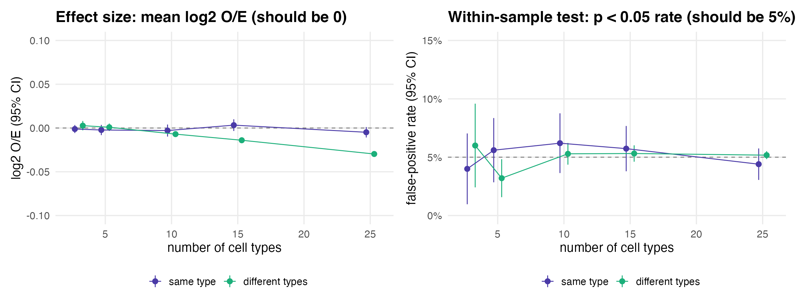
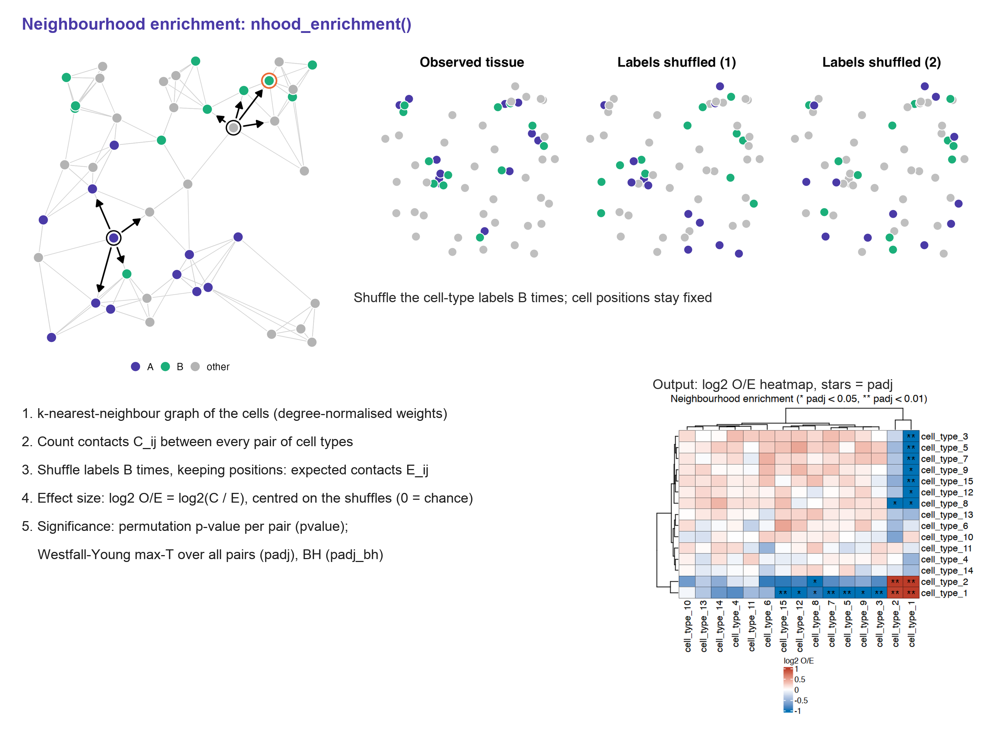
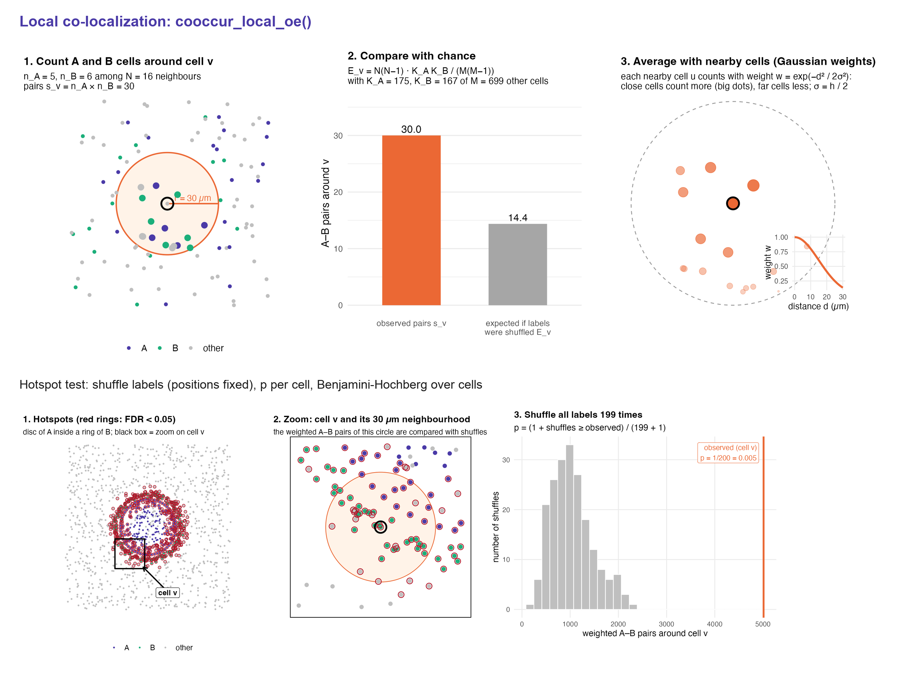

CO-localization, Hotspots And sample-Level Units (read koharu, 小春).
COHALU is the updated version of spatialCooccur, renamed in v0.99.3. Function names and arguments are unchanged: replace
library(spatialCooccur)withlibrary(cohalu).

COHALU is an R package for analyzing spatial co-occurrence and neighborhood interactions in spatial transcriptomics data. It quantifies whether cell types sit together more (or less) often than expected by chance, maps where they meet, compares these scores between patient groups with statistics that treat the patient as the unit of analysis, and (experimentally) measures co-localization directly from transcript coordinates without cell segmentation.
Documentation, tutorials and function reference: https://juninamo.github.io/cohalu/
Tutorials
| Tutorial | What it covers |
|---|---|
| Simulation data: SNA & sCLS | Neighborhood enrichment and the local co-localization score on simulated tissue |
| 10x Xenium data: SNA & sCLS | The same analyses on public Xenium human breast and mouse brain data |
| Case-control comparison | Several images per patient: choosing the score, patient-level tests (Wilcoxon / LMM / blocked permutation), pseudoreplication, covariates, power |
| Segmentation-free co-localization (experimental) | Cross pair correlation of marker transcripts, a random-feature log-Gaussian Cox process model, case-control testing, Xenium mouse brain |
| Algorithm reference | The mathematics behind every core function |
The notebooks behind these pages are in vignettes/.
Features
Single-sample analysis
- Simulate spatial layouts with a planted interaction:
generate_sim() - Neighborhood enrichment with a label-permutation null:
nhood_enrichment()returnslog2_oe= log2(observed / expected), centred on the shuffles (effect size, 0 without interaction for any cell number), and a within-sample test per pair with max-T family-wise adjustment (padj);plot_nhood_heatmap()shows both. Directional statistics (contact,dominance; row = centre cell type) tell “A is surrounded by B” apart from “B is surrounded by A”, which the symmetric pair-level O/E cannot - Radius-based co-occurrence ratio:
calc_co_occurrence_for_radius()/compute_co_occurrence_ratio() - Local co-localization:
cooccur_local_oe()counts A-B pairs around each cell, divides by their exact expectation under label permutation and smooths with a Gaussian kernel (abundance-adjusted local log2 O/E, optional permutation hotspots, O(n k)); the original diffusion sCLS is kept ascooccur_local() - Connected interaction spots:
search_interaction_spot()
Multi-sample / disease-group comparison
- Per-image scores for Seurat objects, lists of Seurat objects or plain tables:
nhood_enrichment_per_sample(),cooccur_ratio_per_sample(),cooccur_local_per_sample(),interaction_spot_per_sample();summarize_by_patient()averages images within patients -
compare_groups(): Wilcoxon (exact for small samples), Welch’s t, linear mixed model with the patient as a random intercept (value ~ group + covariates + (1 | patient);lme4, Satterthwaite df vialmerTest), patient-blocked permutation, and paired designs such as pre- vs post-treatment (method = "signrank", within-patient permutation); warns on pseudoreplication -
associate_continuous(): association with a continuous clinical variable (CRP, disease activity, age) with the patient as the unit (Spearman, linear model with covariates, linear mixed model with a random patient intercept, permutation) - Plots:
plot_group_delta_heatmap(),plot_pair_boxplot(),plot_volcano_groups()
Segmentation-free analysis of transcript coordinates (experimental)
-
read_xenium_transcripts(),bin_transcripts() - Model-free cross pair correlation of gene sets:
pcf_cross(),pcf_matrix(); the relative version is the transcript-level counterpart oflog2_oe - Random-feature log-Gaussian Cox process factor model after Gundersen, Zhang & Engelhardt (AISTATS 2021):
fit_spatial_rff(),rff_pair_correlation();rff_fields()returns the fitted latent fields (cellularity and factors) per cell, transcript or any point; residual factors beyond known structure withrff_offset()+fit_spatial_rff(offset = , ard = ), tested byrff_factor_test() -
colocalization_per_sample()feedscompare_groups() - Unsupervised, gene-level:
colocalization_gene_matrix()(gene x gene log2 O/E of transcript pairs within a radius),colocalization_modules()(co-localizing gene modules),module_enrichment()(any pathways or marker lists) andmodule_enrichr()(enrichR)
How COHALU fits with related tools
Spatial transcriptomics now has excellent tools for discovering structure directly from the data. COHALU is designed to sit next to them and focuses on one question: how strongly do two defined cell populations or gene programmes co-localize, at which distance, and does this differ between groups of patients?
| Tool | Primary focus |
|---|---|
| FICTURE (Si et al., Nat Methods 2024) | Segmentation-free inference of spatial factors at submicron, pixel-level resolution with a multilayer Dirichlet model; scales to billions of transcripts |
| punkst | Scalable toolkit implementing the FICTURE pixel-level factor pipeline and preparing results for visualization |
| MultiScale_ComplementMacrophage (Guo et al., in submission) | Spatial neighbourhood-based regression of gene-level associations (Gaussian-kernel neighbourhood exposure, adjusted for self expression and cell density) to define complement-associated niches in RA synovium |
| COHALU | Calibrated co-localization between labelled populations (cells, transcripts or factors) and patient-level comparison across groups |
What COHALU adds:
A calibrated effect size. Every score is observed / expected under label permutation with positions fixed (
log2_oe, relative pair correlation). It is verified on negative controls to stay at zero for any number of cell types, cell abundance, image size or cellularity, so values can be compared between samples.Distance as an explicit axis.
pcf_matrix()returns co-localization as a curve over distance for all pairs at once (FFT; 45 pairs over a whole Xenium section in about 1.5 minutes), so short-range contact and tissue-scale compartments are separated.Where, not only whether.
cooccur_local_oe()maps local O/E and permutation hotspots for any pair.Case-control and paired designs.
compare_groups()treats the patient as the unit (exact Wilcoxon, mixed models, blocked permutation, signed-rank and sign-flip for pre / post treatment), with power guidance and a pseudoreplication warning.-
Cells, transcripts or factors as input. The same statistics run on segmented cell types, on marker transcripts without segmentation, or on any labelled points, for example pixel-level factors from FICTURE / punkst:
# px: pixel-level factor output with coordinates and the top factor b <- bin_transcripts(px, bin_size = 4, x_col = "X", y_col = "Y", gene_col = "K1") pcf_matrix(b, list(F1 = "1", F2 = "2", F3 = "3"), r_max = 100) A generative model when needed.
fit_spatial_rff()fits a random-feature log-Gaussian Cox process (Gundersen, Zhang & Engelhardt, AISTATS 2021) that learns spatial length scales and separates cellularity from composition.
Validation
Every module is checked on simulated positive controls (a planted interaction or group difference) and negative controls (nothing planted), repeated over many tissues or studies.

Neighbourhood enrichment on 500 random tissues (100 per number of cell types): log2 O/E stays at 0 (grey: before centring on the shuffles), each pair gives 5% false positives, and the max-T adjusted padj keeps the chance of any false pair at or below 5% for 3 to 25 cell types (mean and 95% CI).
| Check | Setting | Result |
|---|---|---|
| Neighbourhood enrichment, negative control | random tissues, 3–25 cell types (even or 1–30% abundance) | log2 O/E 95% CI includes 0; per-pair false positives ≈ 5%; any pair with padj < 0.05 in ≤ 6% of tissues (BH: up to 12%) |
Neighbourhood enrichment, directional (contact, dominance), negative control |
random tissues, 3–10 cell types (3–30% abundance), 100–400 tissues | per ordered pair 3.6–5.1% false positives; any ordered pair with *_padj < 0.05 in 3–6% of tissues (95% CI includes 5%) |
| Neighbourhood enrichment, positive control | B placed 5–100 µm from A, 20 tissues per distance | planted pair log2 O/E ≈ 0.3–0.4 up to 20 µm and padj < 0.05 in 90–100% of tissues; 95% CI includes 0 from 40 µm |
| Local O/E, negative control | only the abundance of A and B changes (3–24%) | section O/E 95% CI includes 0; ≤ 5% of cells with p < 0.05; no FDR hits in 80 tissues |
| Local O/E, positive control | ring of B around a disc of A | 74% of ring cells are hotspots, 0% far away |
| Group comparison, negative controls | 200 studies each: no difference, or 4× larger images | 3–4.5% false positives (mixed model, patient-level Wilcoxon) |
| Pseudoreplication | images treated as independent | 13.8% false positives vs ≈ 5% with patient-aware tests |
| Segmentation-free | shared niche field / cellularity-only difference | relative g follows the truth; calibrated when only cellularity differs |
Compute cost (one core of an Apple M3 Max, R 4.3.2; RA synovium, Xenium 5K):
| Task | Size | Time | Peak memory |
|---|---|---|---|
nhood_enrichment(), 100 shuffles |
18k / 63k / 100k / 140k cells | 3 / 11 / 17 / 24 s | 0.7–1.4 GB |
cooccur_local_oe(), no / 99 shuffles |
140k cells | 1.4 s / 15 s | 1.6 GB |
compare_groups() |
34 sections × 105 pairs | 0.2 s (signed-rank), 1.7 s (mixed model) | < 0.6 GB |
read_xenium_transcripts() + pcf_matrix()
|
1 section, 8 marker sets, 1.8M transcripts | 40 s | 5.5 GB (reading the 5K parquet) |
fit_spatial_rff(), 6 factors |
1 mm × 1 mm | 2.9 min | 5.5 GB |
Note for users of versions <= 0.99.1. Version 0.99.2 fixes the permutation null of
nhood_enrichment()(same-type z-scores were inflated) and the diffusion ofcooccur_local()formaxnsteps > 1. Results from earlier versions are not directly comparable; see NEWS.
Quick start
1. Spatial Neighborhood Analysis (SNA)
library(cohalu)
df <- generate_sim(close_ratio = 1, n_types = 15, max_loc = 800, n_cells = 500,
test_type = "circle", distance_param = 20, seed = 1234)
res <- nhood_enrichment(df, cluster_key = "cell_type", neighbors.k = 30,
n_perms = 100, seed = 1234, n_jobs = 1)
res$log2_oe # effect size: use this to compare samples
res$padj # within-sample significance, max-T adjusted over all pairs
plot_nhood_heatmap(res) # log2 O/E with significance stars3. Comparing patient groups
df_groups <- generate_sim_groups(
n_samples_per_group = 6, n_images_per_patient = 3,
group_close_ratio = list(case = 0.8, control = 0.2),
n_types = 5, n_cells = 400, test_type = "distribute", distance_param = 15
)
per_image <- nhood_enrichment_per_sample(
df_groups, sample_key = "sample_id", group_key = "group",
cluster_key = "cell_type", patient_key = "patient",
neighbors.k = 20, n_perms = 100, n_jobs = 1
)
# images are nested in patients: use a mixed model (or aggregate first
# with summarize_by_patient() and use method = "wilcox")
res <- compare_groups(per_image, value = "log2_oe", method = "lmm",
patient_key = "patient", ref_group = "control",
symmetric = TRUE)
head(res)
plot_volcano_groups(res, label_top = 5)4. Segmentation-free co-localization (experimental)
tx <- read_xenium_transcripts("path/to/xenium_outs", genes = unlist(marker_sets))
b <- bin_transcripts(tx, bin_size = 4)
pcf_matrix(b, marker_sets, r_max = 100) # log_g and log_g_rel for every pair
# no gene sets: find co-localizing gene modules, then interpret them
M <- colocalization_gene_matrix(b, radius = 20, top_n = 300)
mods <- colocalization_modules(M, n_modules = 15)
module_enrichment(mods, my_pathways) # named list of gene setsHow the methods work
- Neighbourhood enrichment (
nhood_enrichment())

- Local co-localization and hotspots (
cooccur_local_oe())

The JCI Insight paper below used an earlier version of these methods (neighbourhood enrichment reported as z-scores, and a random-walk co-localization score). Since 0.99.3 the package reports log2 O/E with permutation-based multiple-testing correction and the local O/E; see NEWS.
📝 Citation
Jun Inamo, Roselyn Fierkens, Michael R. Clay, Anna Helena Jonsson, Clara Lin, Kari Hayes, Nathan Rogers, Heather Leach, Kentaro Yomogida. Spatial transcriptomics reveals immune–stromal crosstalk within the synovium of patients with juvenile idiopathic arthritis. JCI Insight 2026;11(1):e198074. doi:[10.1172/jci.insight.198074](https://doi.org/10.1172/jci.insight.198074)
Contact
For questions or issues, please open a GitHub issue or contact:
Name: Jun Inamo
Email: juninamo@keio.jp
Affiliation: Department of Microbiology and Immunology, Keio University School of Medicine